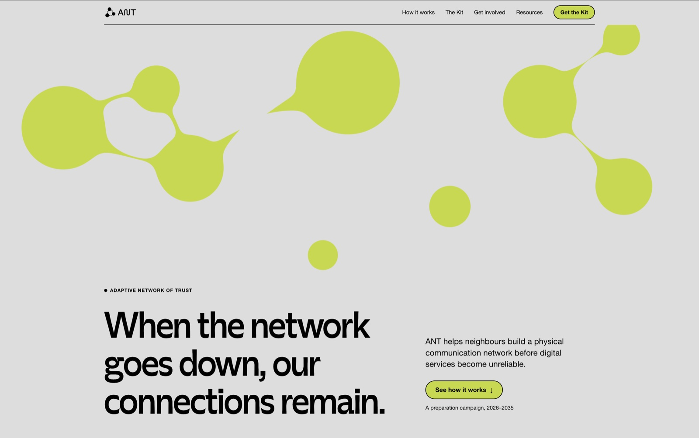
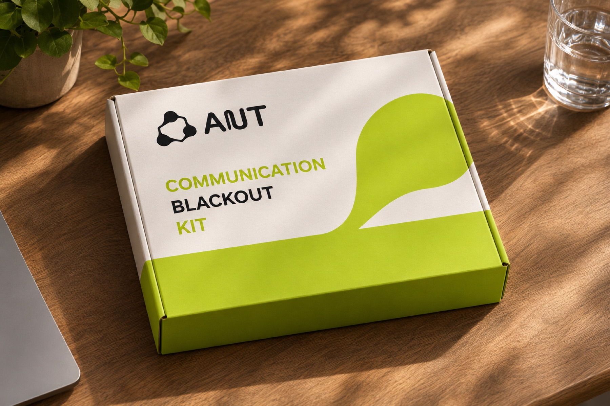
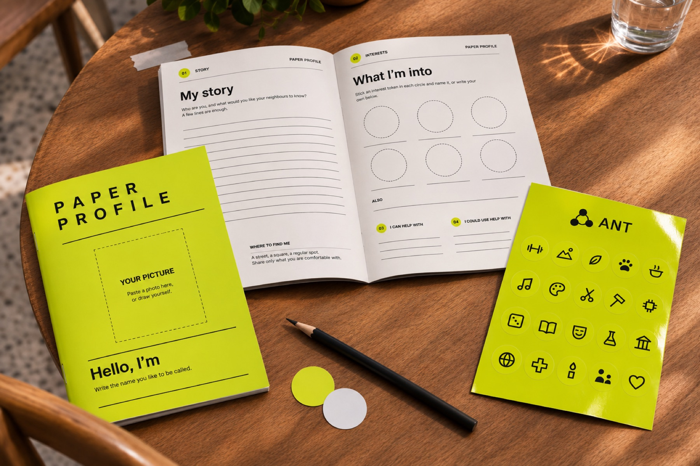
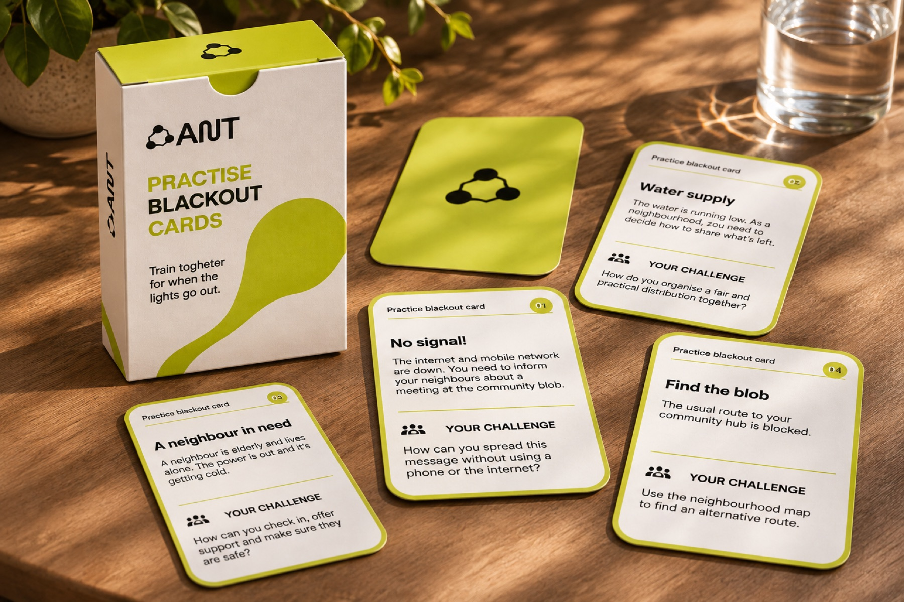
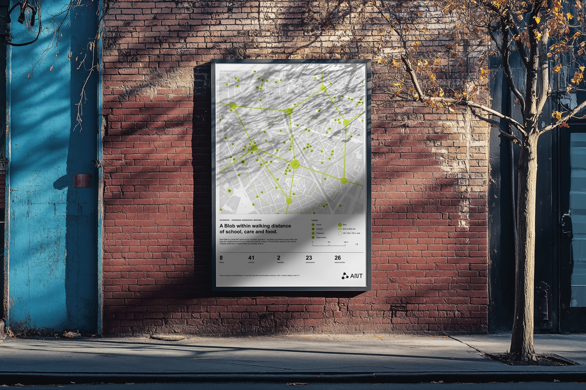
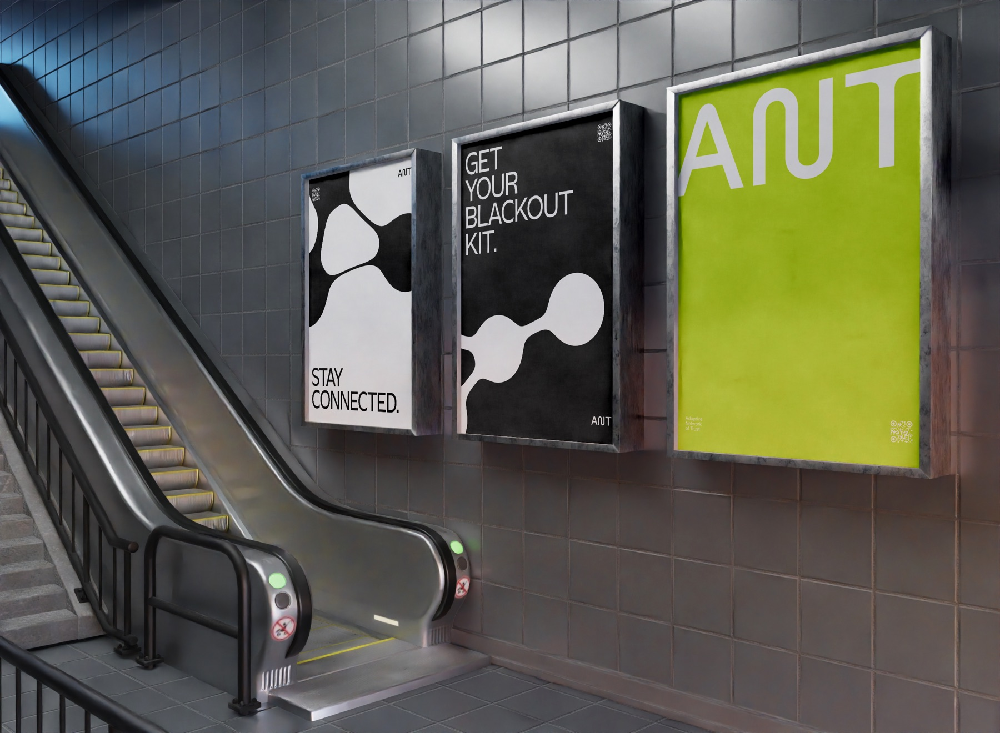
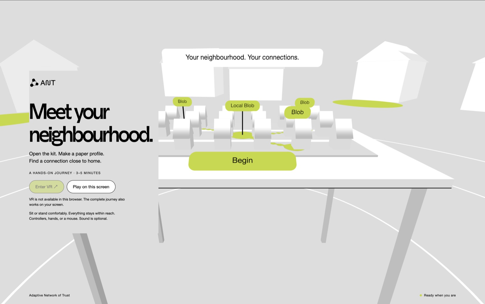

Visuals
Project gallery
A collaborative ecosystem. My contributions: Interest Tokens, campaign video and logo animations.
01
Communication Blackout Kit

02
Paper Profile & Interest Tokens
Interest Tokens · Designed by me
Interest Tokens help people share their interests and discover connections within their community. The Paper Profile was developed collaboratively.

03
Blackout Cards
Supporting tools within the collaboratively developed physical communication ecosystem.

04
Neighbourhood Map
Extending the communication ecosystem into the neighbourhood. Developed as a group.

05
Awareness Campaign
A collaborative campaign bringing ANT into public space.

06
Campaign Video
Created by me
07
Logo Animations
Created by me
Motion studies bringing the collaboratively developed ANT identity to life.
08
Digital Experiences
Explore the wider ecosystem developed through the group project.

ANT VR Experience
Explore the ANT world through the project’s virtual reality experience.
Explore experience